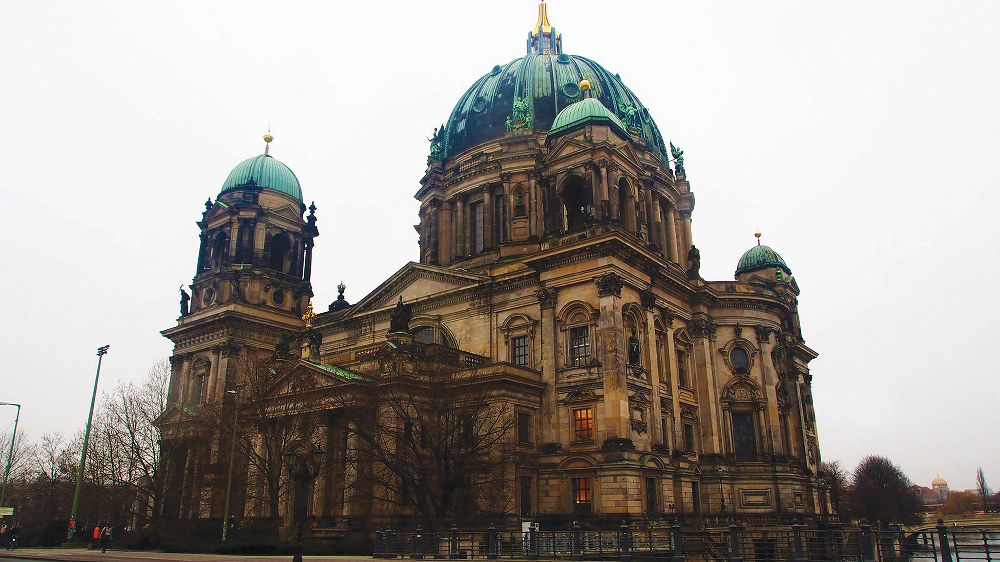
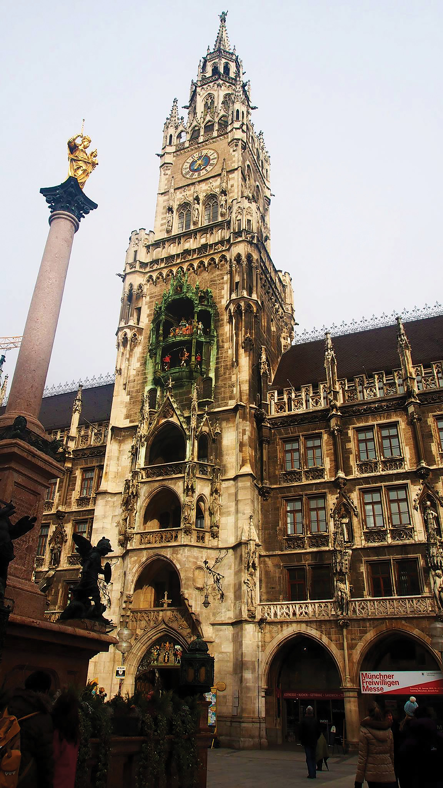

CONTOURCULTURE

Dalyna Meuansanith
BUILDING SUSTAINABILITY
Architecture in all its forms represent our past, present and future. When we look back at what our ancestors have built, we are reminded of the constant changes of our society.
As a young person, when I look at the world around me, I try to grasp what this is. The questions I ask are: “Who are we?” and “What are we doing here?” Would it be strange to say that the answers lie in the architecture we see in our day-to-day lives? Architecture provides a glimpse into the future that frames our understanding of the past. We’re building upon knowledge gained through many centuries of design, engineering and of trial and error which shapes us as the civilisation we are today. So what if the foundation of who we are lie in our buildings?
In the beginning, around about 9500 BCE as humans we need to build shelters to survive and to shelter us from the night. When you go to a place like Rome and you see all the ruins and scattered remnants of the bygone civilisation. It tells a story. True to the saying Rome wasn’t built in a day as I take in all the ruins and piece the story together. It’s a moment of wonder the moment you realise that their buildings had remained there for thousands of years and still the earth has not swallowed the entirety of its existence.
A civilisation with only a fraction of what we know about the world still manages to build such a remarkable, long standing piece of architecture. The Romans built to impress and entertain and now, even more than a millennia later, their buildings still remains true to their purpose. You ask yourself the bigger questions. Is this something the buildings of today in thousands of years’ time will do? Will our future selves also be looking with awe at who we were today? In todays world artists and architects work together to incorporate architecture with art where both coincide with each other; so much so that it should now be called ARTitecture.
"The art of architecture provides a glimpse into the future that’s framed within an understanding of the past."
Now compare Roman structures built with the purpose of survival to modern architecture of the 21st century. Frank Lloyd Wright is a very famous architect who likes to utilise his surroundings in his construction. I personally call him our most famous modern architect of our contemporary time. As the sole creator of countless amounts of structures he has had an enormous influence on how our houses are being built across the globe.
One famous example of his Prairie style home is the ‘Falling water’ completed in 1964. Wright took this idea further, however, and promoted what he calls organic architecture. This term refers to using both structure and materials to integrate designs with nature and the surrounding environment. He is one of the most influential modern architects in this earth, for not only does he create for the reason of aesthetics but he uses his surrounding environment to affect his creation. Our architecture, which was once reliant on basic survival, he transformed into something more. He called architecture “the mother art,” explaining: “Without an architecture of our own, we have no soul of our own civilization.” Our buildings indeed are one of the main methods of identification for a country.
The world has such a large array of brilliant architecture. I describe them as the pillars of the countries. There’s a kind of cycle with the relationship between the architecture and the country it is found in. The environment affects how the building is fashioned, and yet the buildings are how we define the environment it is built in. Take Australia for example. Basically, it is hotter than most countries, the weather fluctuates more unpredictably than their economy.
The early houses of Queensland were characterised by broad verandas shaded by elegantly arched stretches of crenelated iron, tall stumps, mesh, and roof ventilators. These all work together to give the effect of cooling the house, allowing for breeze, and allowed for the run off of tropical down pours. Modern architects such as Glenn Murcutt has adopted all these practices ‘in building houses that float above the land’ – buildings which ‘touch the earth lightly’. This phrase, an Aboriginal saying from Western Australia, is used by Glenn Murcutt to convey the idea that buildings should not disturb nature more than necessary and should in fact work with nature.

"Without an architecture of our own, we have no soul of our own civilization."
Architects must adapt to the changing environment and take into considerations the identity they want to represent through these buildings. The desire for people to express their identity through a building is very powerful but understanding and describing who we are is never easy.
“Mainstream Australia has this problem of its own identity ... what, who are we? They desperately hold on to the English model of housing for example, and this fascination that they have, or obsession with this Federation.” -Dillon Kombumerri, architect.
Modern architecture is all about learning from our past and reiterating the qualities that we find that will better our design. It is also about evolving as our land progresses while maintaining our identity and history that is embedded in every building. Architecture has defined us as human beings and as the one who creates immense buildings to shape our lives.
"Mainstream Australia has this problem of its own identity ... what, who are we? They desperately hold on to the English model of housing for example, and this fascination that they have, or obsession with this Federation."